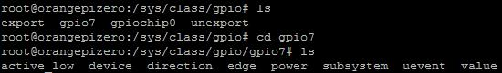
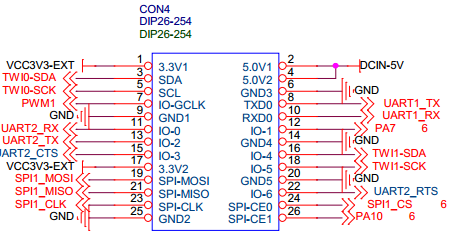

昨天写了《Linux+全志H3处理器在用户态操作GPIO（mmap+读写寄存器）》，里面提到之所以自己读写寄存器，是因为发现官方没有提供gpiolib的实现。今天发现，我是错怪了Armbian了（我在Orange Pi Zero上使用的是Armbian）。其实Armbian提供了gpiolib的实现，不仅可以在驱动程序中调用<linux/gpio.h>中gpio_*相关函数，而且还可以通过读写/sys/class/gpio目录下的文件来控制GPIO。
Linux定义了<linux/gpio.h>头文件，里面有各种gpio_*函数，比如
int gpio_direction_input(unsigned gpio); int gpio_direction_output(unsigned gpio,int value); int gpio_get_value(unsigned gpio); void gpio_set_value(unsigned gpio,int value);
等等。对于大多数的硬件平台，这些函数已经能够应付需求了。Linux只定义这些函数的接口，具体的实现需要硬件厂家来做。这样，Linux就对GPIO进行了标准化，以屏蔽各种硬件平台的差异。这样的好处就是提高了驱动程序的可移植性。试想，《Linux+全志H3处理器在用户态操作GPIO（mmap+读写寄存器）》中这样操作GPIO，就把逻辑和具体的芯片绑定了，换一种芯片就可能要重写。
不过呢，<linux/gpio.h>中的函数只能在驱动程序和内核中调用。应用程序如果需要操作GPIO的话，那么得需要使用/sys/class/gpio目录下的文件（当然还有一些别的第三方库可以用）。本篇博客就先来讲怎么通过/sys/class/gpio目录下的文件来操作GPIO。
如果在Orange Pi Zero上刷了Armbian_5.24_Orangepizero_Debian_jessie_3.4.113.7z中的Armbain镜像，那么在Orange Pi Zero的/sys/class/gpio目录下可以看到export、unexport和gpiochip0三个文件：
cd /sys/class/gpio ls

export文件用于导出GPIO引脚，unexport用于释放GPIO引脚，而gpiochip0代表gpio芯片的信息。
比如我想导出7号GPIO引脚，那么就这样：
echo 7 > export
如果成功，就会在/sys/class/gpio目录下多出一个gpio7的目录。然后gpio7目录中包含了若干的文件：

应用程序需要用到的就只有direction、edge和value。而在shell中可用的就只有direction和value。direction控制GPIO的工作模式是输入还是输出，而value则用于写出或读入GPIO的值。
我先告诉你，gpio7对应了Orange Pi Zero的PA7引脚（待会儿会说怎么个对应关系）。现在我们做几个实验。首先，把一个LED的GND接Pi的GND，LED的VCC接Pi的PA7引脚。额，你不知道哪个是PA7？丢给你Orange Pi Zero的GPIO分配图（在orange_pi-zero-v1_11.pdf第11页）：

这个布局其实和树莓派B+的26引脚是一致的，也就是兼容的。
然后，在shell中输入如下命令：
echo out > gpio7/direction echo 1 > gpio7/value
于是奇迹出现啦！LED亮了！如果再接着输入：
echo 0 > gpio7/value
LED又灭了！
OK，试验完了输出，就试试输入吧。把PA7通过一个1K的电阻接到VCC上，然后在shell中输入命令：
echo in > gpio7/direction cat gpio7/value
可以看到输出了1。
如果把PA7通过一个1K的电阻接到GND上，然后输出：
cat gpio7/value
那么就看到输出了0。
别急，事情还没玩呢。试验了输入和输出，我们再来试试中断！啥？在用户态还能有中断？其实呢，就是select/poll来检测GPIO引脚上的变化啦。刚刚除了说道direction和value以外，还说到了edge这个文件。edge就是控制边沿触发条件的，可以取以下几个值：
| 取值 | 含义 |
|---|---|
| none | 引脚为输入，不是中断引脚 |
| rising | 引脚为中断输入，上升沿触发 |
| falling | 引脚为中断输入，下降沿触发 |
| both | 引脚为中断输入，边沿触发 |
比如我想监听PA7上的电平变化（也就是边沿触发），那么应该先向“/sys/class/gpio/gpio7/direction”写入“in”，然后向“/sys/class/gpio/gpio7/edge”写入“both”，然后对”/sys/class/gpio/gpio7/value”执行select/poll操作。
代码如下：
poll_test.c
#include <stdio.h>
#include <fcntl.h>
#include <poll.h>
#include <unistd.h>
int main()
{
int fd=open("/sys/class/gpio/gpio7/value",O_RDONLY);
if(fd<0)
{
perror("open '/sys/class/gpio/gpio7/value' failed!\n");
return -1;
}
struct pollfd fds[1];
fds[0].fd=fd;
fds[0].events=POLLPRI;
while(1)
{
if(poll(fds,1,0)==-1)
{
perror("poll failed!\n");
return -1;
}
if(fds[0].revents&POLLPRI)
{
if(lseek(fd,0,SEEK_SET)==-1)
{
perror("lseek failed!\n");
return -1;
}
char buffer[16];
int len;
if((len=read(fd,buffer,sizeof(buffer)))==-1)
{
perror("read failed!\n");
return -1;
}
buffer[len]=0;
printf("%s",buffer);
}
}
return 0;
}
这个小程序的作用就是就是不断poll(“/sys/class/gpio/gpio7/value”)。一旦poll()返回，就输出PA7的值。
假设代码放在～目录下，然后输入如下命令：
cd ~ gcc poll_test.c -o poll_test echo in > /sys/class/gpio/gpio7/direction echo both > /sys/class/gpio/gpio7/edge ./poll_test
用1K电阻把PA7上拉到VCC，然后用一根导线把PA7与GND连接又断开，会发现不断输出1和0（当PA7连上GND的瞬间输出0，与GND断开的瞬间输出1）。说明poll()确实能检测到电平变化。
最后，再来讲解一下引脚和编号是怎么对应的。最简单的方法就是看wiki上的说明：

计算还是很简单的。
当然，如果你有极客精神，可以直接查看源码（/usr/src/linux-headers-3.4.113-sun8i/arch/arm/mach-sunxi/include/mach/gpio.h），这里就截取前面几行重要的：
#define SUNXI_BANK_SIZE 32 #define SUNXI_PA_BASE 0 #define SUNXI_PB_BASE 32 #define SUNXI_PC_BASE 64 #define SUNXI_PD_BASE 96 #define SUNXI_PE_BASE 128 #define SUNXI_PF_BASE 160 #define SUNXI_PG_BASE 192 #define SUNXI_PH_BASE 224 #define SUNXI_PI_BASE 256 #define SUNXI_PJ_BASE 288 #define SUNXI_PK_BASE 320 #define SUNXI_PL_BASE 352 #define SUNXI_PM_BASE 384 #define SUNXI_PN_BASE 416 #define SUNXI_PO_BASE 448 #define AXP_PIN_BASE 1024 #define SUNXI_PIN_NAME_MAX_LEN 8 /* sunxi gpio name space */ #define GPIOA(n) (SUNXI_PA_BASE + (n)) #define GPIOB(n) (SUNXI_PB_BASE + (n)) #define GPIOC(n) (SUNXI_PC_BASE + (n)) #define GPIOD(n) (SUNXI_PD_BASE + (n)) #define GPIOE(n) (SUNXI_PE_BASE + (n)) #define GPIOF(n) (SUNXI_PF_BASE + (n)) #define GPIOG(n) (SUNXI_PG_BASE + (n)) #define GPIOH(n) (SUNXI_PH_BASE + (n)) #define GPIOI(n) (SUNXI_PI_BASE + (n)) #define GPIOJ(n) (SUNXI_PJ_BASE + (n)) #define GPIOK(n) (SUNXI_PK_BASE + (n)) #define GPIOL(n) (SUNXI_PL_BASE + (n)) #define GPIOM(n) (SUNXI_PM_BASE + (n)) #define GPION(n) (SUNXI_PN_BASE + (n))
比如PA7就是GPIOA(7)=SUNXI_PA_BASE+7=0+7=7。就这么简单～